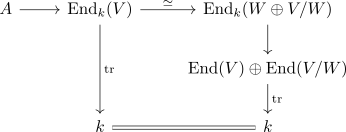

additivity of characters for finite dimensional representations
Proposition
Let $A$ be a K-Algebra and $W \subseteq V$ finite dimensional representations Then we have
\begin{align*}
\chi_{V} = \chi_{W} + \chi_{V/W}
\end{align*}
for the characters $\chi_{-}$
Proof
Observe that on the level vector spaces, there exists a split exact sequence
\begin{align*}
V \rightarrow W \rightarrow V/W
\end{align*}
which is still exact on the level of representations.
Now the trace only depends on the underlying vector space and is there additive, i.e. we have a factorization

where the map $\mathrm{End}_{k}(W \oplus V/W) \rightarrow \mathrm{End}(V) \oplus \mathrm{End}(V/W)$ picks out the diagonal blocks.